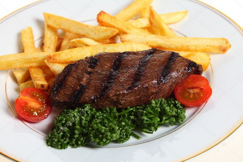

Steak Fries
Ingredients
- 2 russet potatoes, cut into 8 wedges
- 2 tablespoons olive oil
- salt, to taste
- pepper, to taste
- 4 cloves garlic, minced
- 1 teaspoon italian seasoning
- Half cup freshly grated parmesan cheese(55 g)
- 4 top sirloin steaks, 1-inch (2 cm) think, patted dry
- 2 tablespoons fresh parsley, chopped
- 4 tablespoons garlic butter, to serve

Modus Operandi
- Preheat oven to 375˚F (190˚C)
- Place potatoes in a single layer onto one of a greased baking sheet and drizzle with olive oil, and season with salt, pepper, garlic, Italian seasoning, and Parmesan, gently tossing to combine
- Bake for 20-25 minutes, or until golden brown and crisp, tossing occasionally
- Preheat oven to broil
- Season steaks with salt and pepper, to taste, and place onto the opposite side of the prepared baking sheet in a single layer
- Place into oven and broil until the steak is browned and charred at the edges, about 4-5 minutes per side for medium-rare, or until desired doneness
- Serve immediately with garlic butter, and top with parsley